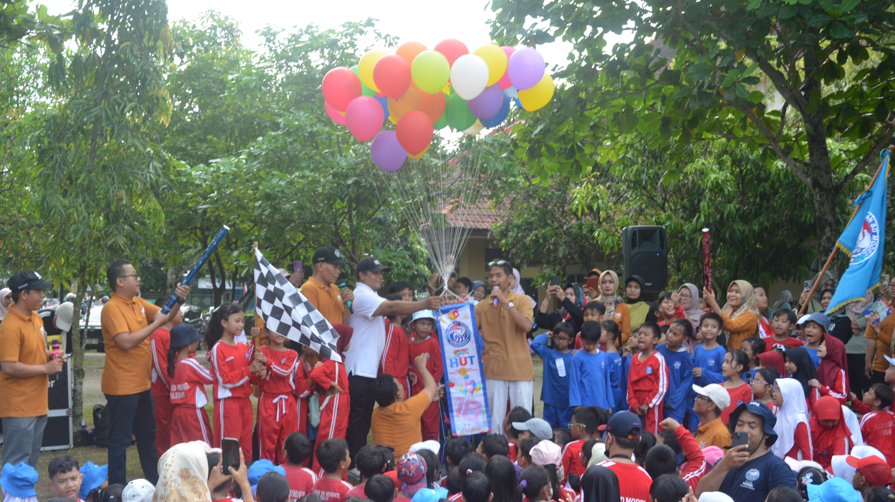
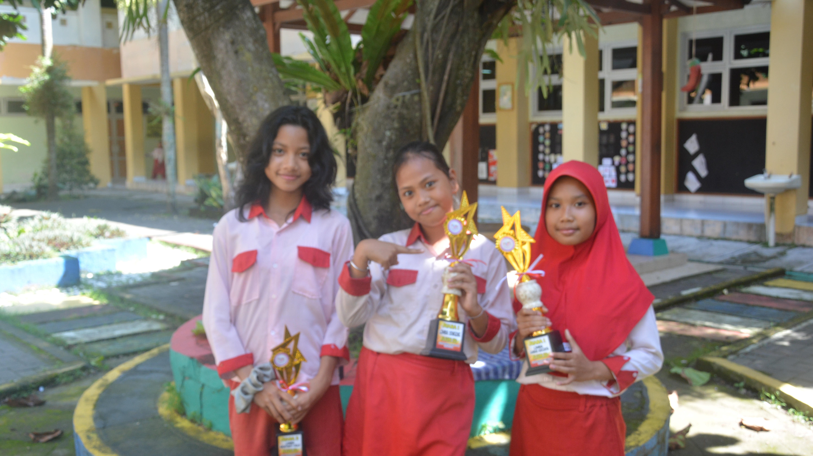

Masa Depan Gemilang
Dimulai dari Sini.
Bersama SD Negeri Model Sleman, kami membentuk generasi cerdas, berkarakter, dan siap menghadapi tantangan masa depan bangsa.
45+
Guru Sertifikasi
600+
Siswa Aktif
A
Akreditasi
45+
Guru
600+
Siswa
A
Akreditasi
25+
Tahun
Layanan & Informasi
Berita & Pengumuman
Informasi terkini dari lingkungan sekolah

Pemenang Olimpiade Sains Nasional 2024
Siswa SD Negeri Model meraih medali emas dalam kompetisi sains tingkat nasional yang diadakan di Jakarta.
calendar_today 15 Juni 2024
Festival Budaya Nusantara SD Model 2024
Merayakan keberagaman budaya Indonesia melalui seni tari tradisional dan pameran kuliner Nusantara.
calendar_today 28 Mei 2024Kalender Akademik
Jadwal kegiatan penting tahun ajaran 2024/2025
Pertemuan Wali Murid
Senin, 2024
schedule 08.00 – 14.00 WIB
Kunjungan Belajar
Selasa, 2024
location_on Museum Sains Jakarta
Workshop Hari Batik
Sabtu, 2024
palette Ruang Seni Sekolah
SPMB 2026/2027
Wujudkan Masa Depan
Terbaik Anak Anda.
Pendaftaran Seleksi Penerimaan Murid Baru Tahun Ajaran 2026/2027 kini telah dibuka. Tempat terbatas — segera daftarkan putra-putri Anda.